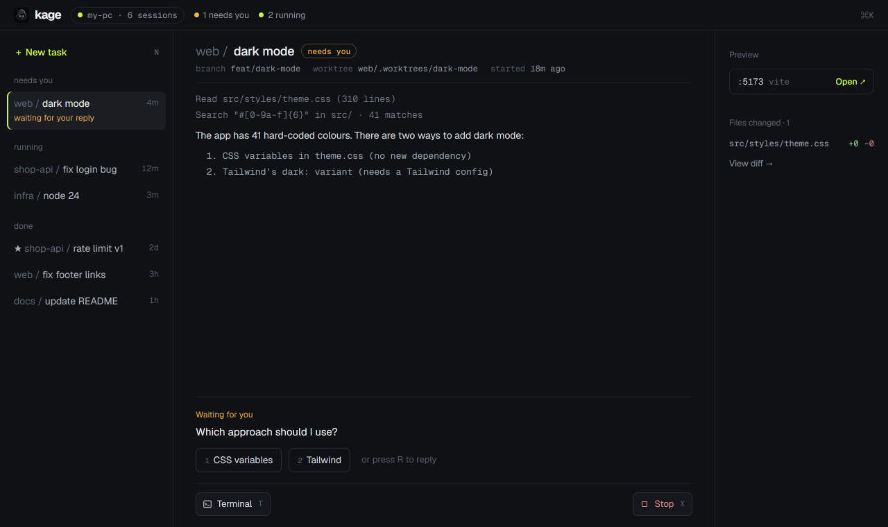
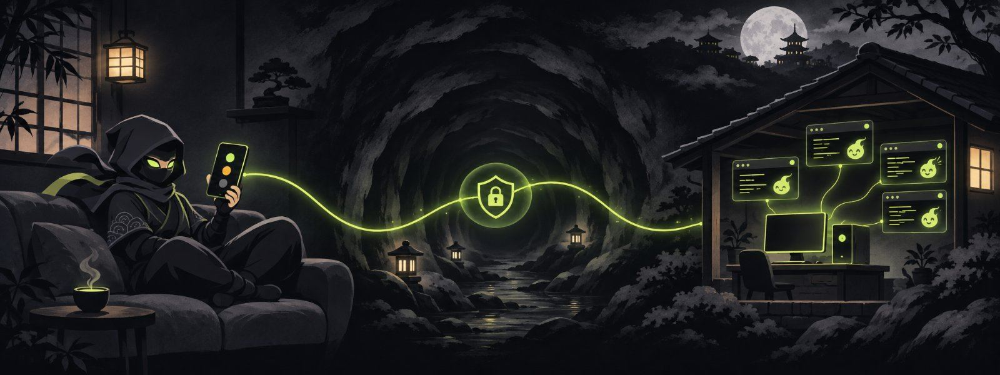

Every session at a glance
Each Claude Code session is a tmux window with a live status. Status comes from Claude Code's own hooks, so a question shows the moment Claude asks it.
running
needs you
done
Kage is a small web dashboard that runs on your server or home PC. It shows every Claude Code session in one place, so you can start, watch, answer and stop them from your laptop. Desktop first; a phone layout is planned.

A thin layer over tools you already trust. tmux keeps the sessions alive, git tracks what changed, and Tailscale keeps everything private. Kage adds no database and no open router ports.
Kage gives you one calm screen that shows what every session is doing, and which ones are waiting for you. See the roadmap.
Each Claude Code session is a tmux window with a live status. Status comes from Claude Code's own hooks, so a question shows the moment Claude asks it.
Follow what Claude says, the tools it runs and the edits it makes, as it works. Kage reads the session's transcript, so prose, commands and diffs each look right.
Type a task, pick a project and a branch. Kage makes a git worktree on a new branch, opens a tmux window there and starts claude on it.
Permission prompts and questions become buttons. Click one or press its number. Reply in your own words, send a follow-up, or stop a session.
Kage finds the ports your agents serve and links you straight to them. A port that only listens on the PC gets the ssh -L command instead.
See every file a task touched, uncommitted ones too, with line counts. View diff opens the same files as a read-only diff, a page at a time.
Pin a session to keep it first and out of auto-archive. Archive one to close Claude and tuck it away; its worktree and branch stay, and you can restore it. Kage archives a done session once its branch is merged. A session whose Claude has exited can be resumed.
Before it removes a worktree and its branch, Kage says what would be lost: commits that aren't pushed, uncommitted files and ignored files such as .env. It deletes only after you confirm those counts, and only worktrees it made.
Open the session's real tmux window in the browser and type to Claude as you would at the PC. It loads only when you open it. Windows Kage didn't start are view-only.
Get a ping through ntfy when a session needs you, or when a long turn is done. It carries only the project, the task and a link back to the session. The topic is a secret, so keep it like a password. It stays off until you set it.
One search box for every session and action: jump to a session by name, start a task, open the diff or turn on browser notifications. Press Ctrl K on Linux and Windows, ⌘ K on a Mac.
Kage never hides them. It listens on your Tailscale address only, so the board can't be reached from the public internet or your local Wi-Fi.

Each session is a window in the tmux session kage, in its own git worktree. Agents don't trip over each other, or over your own work.
Claude Code's hooks call kage hook, which tells the server over a Unix socket. A permission prompt turns the session amber at once.
Kage tails Claude's transcript file and turns new records into lines: what Claude says, the tools it runs, the edits it makes.
One event stream per browser tab pushes small updates. Nothing is polled while nobody is watching.
Kage only adds to your setup. The real terminal is always one command away: tmux attach -t kage
Kage starts programs and sends keys on your machine. So it stays private, checks every request, and never acts on a screen it hasn't just read.
Kage listens on your Tailscale address, or on loopback if you chose that. It refuses 0.0.0.0 and any other address unless you pass --unsafe-listen-all.
Live mode needs an access token unless you turn that off yourself. Each browser signs in once, and you can sign it out at any time. Logins expire, and a restart ends them. Five wrong tries lock an address out for a minute.
Kage answers only to names nobody else on your network can claim: its Tailscale address, its full MagicDNS name, the host you set, and localhost on loopback. Any other name gets 403, which stops DNS rebinding. Every action also needs Kage's own header and a matching origin.
Before Kage sends an answer, it reads the pane again. If the question changed, nothing is sent. A click meant for one prompt never approves another.
tmux and git run with argument lists, never a shell string. Your task text reaches claude as one argument, so it can't inject commands.
Kage never stops or deletes windows, worktrees or branches it didn't create. It never offers to skip Claude's permission prompts. Nothing installs or runs as root.
Anyone who can reach Kage can run Claude Code on your machine. Only add devices you trust to your tailnet, and set a token if others share it.
The running Kage contacts nothing outside your machine except your ntfy server, and only when you set a topic. kage update and the installer download from GitHub, only when you run them, over HTTPS, and check the program against the release's SHA256SUMS. kage ping, and kage setup when you say yes to pings, send one test ping to your ntfy server.
The checksum catches a broken download, not a forged release. Releases aren't signed yet.
Found a problem? Report it privately.
Kage is in early development, and no release exists yet. For now you run it from a checkout. The demo shows sample sessions and needs no tmux, no Tailscale and no token.
You need Node 24.2 or newer. No release exists yet, so you run it from a checkout of main.
git clone https://github.com/eridian-io/kage.gitcd kagecorepack enablepnpm installpnpm demoThe demo runs on loopback. Open the address it prints. To use your own sessions (Linux, or WSL on Windows), with tmux and Tailscale up, build Kage and run setup. It asks before it changes anything, and can set up pings to your phone:
pnpm buildnode packages/server/dist/kage.mjs setupThen open the address setup prints and press N to start a task. More in the README.
curl -fsSL https://raw.githubusercontent.com/eridian-io/kage/main/install.sh | shWorks once the first release is published. Until then, install from a checkout.
~/.local/bin without sudokage setup, which asks before it changes anythingEach phase ends with a check that proves it works.
The server, config, Tailscale bind and security checks, and the board in demo mode.
on mainLive tmux sessions, with status from hooks and output from transcripts.
on mainStart, answer, reply to and stop tasks; preview links, changed files and token login.
on mainPin, archive and delete sessions, a diff view, and a full terminal in the browser, loaded only when you open it.
on mainNotifications in the browser and through ntfy, a command palette, and performance budgets that the test suite checks.
on mainA one-line installer, kage setup, status, doctor, update and uninstall, services that start on boot, and single-file releases with checksums. No release is published yet.
Security, reliability, speed and ease of use: a login for each browser with sign-out, only your tailnet names trusted, no live mode without a token, kage restart and kage logs, pnpm demo, pings set up by kage setup, a faster kage hook and a lighter Kage.
Measured, against the budget: idle memory 71 MB of 80, first load 26.4–26.5 KB gzipped of 30, hook to screen 7.4 ms of 150.
on mainIt works quietly in the background, and steps forward only when an agent needs you.